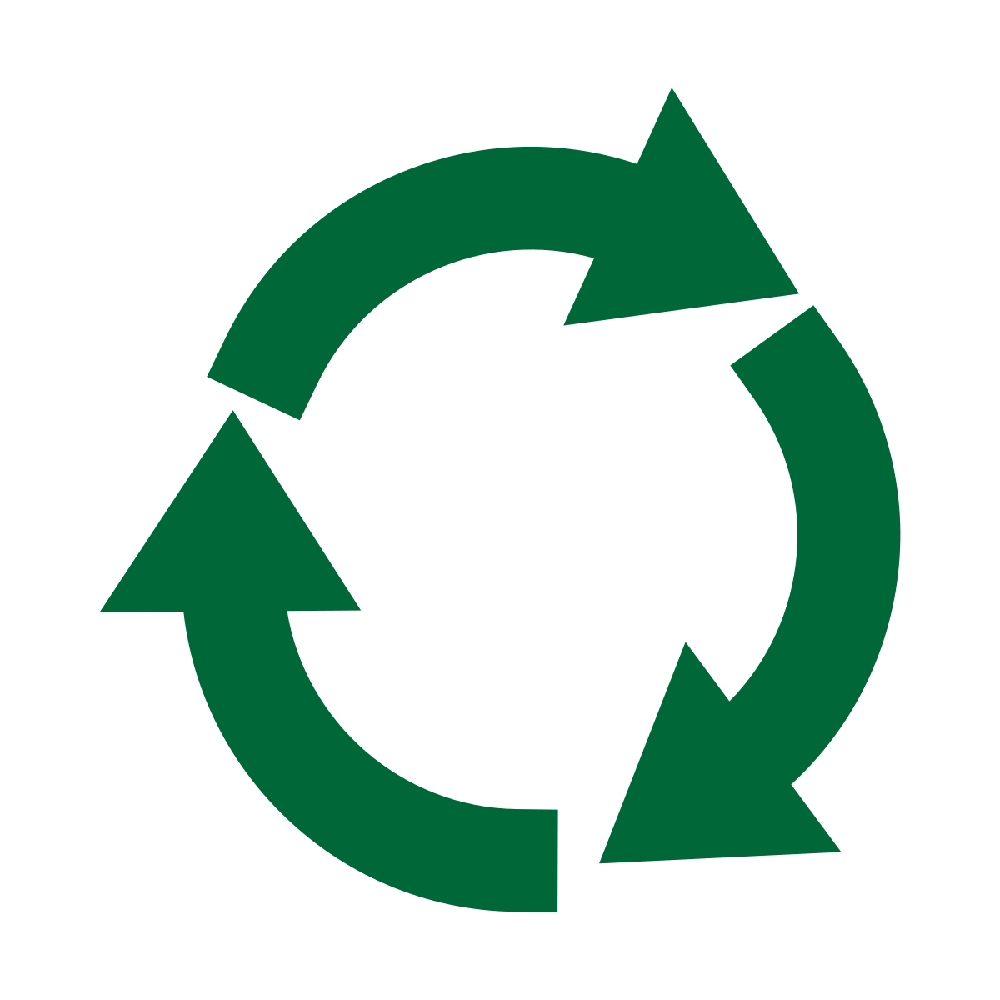

«Cada residuo, un recurso conectado.»
Quiénes somos
Somos una consultora e integradora de tecnologías habilitadoras digitales (THD) especializada en el sector residuos y reciclaje. Ayudamos a plantas de clasificación, gestores de residuos y ayuntamientos a modernizarse de forma sostenible.
El problema que resolvemos
Muchas empresas de gestión de residuos trabajan con rutas fijas, clasificación manual, poca trazabilidad y datos dispersos. Eso provoca contenedores que se recogen vacíos o desbordados, material reciclable que acaba en vertedero, costes altos y riesgos laborales. Nosotros les explicamos qué THD les convienen y las implantamos.
Misión, visión y valores
Misión
Digitalizar la cadena del residuo para recuperar más material con menos recursos.
Visión
Ser la consultora de referencia en digitalización circular del sector de residuos en el sur de España.
Valores
- Sostenibilidad: cada proyecto debe reducir residuos, energía o emisiones, y medimos ese impacto.
- Rigor técnico: solo recomendamos tecnología que el cliente necesita.
- Seguridad: la ciberseguridad se diseña desde el inicio.
- Transparencia: datos y resultados claros para el cliente.
THD con las que trabajamos
De la Industria 1.0 a la 5.0
- Industria 1.0: mecanización con máquina de vapor y agua.
- Industria 2.0: producción en masa con electricidad y cadenas de montaje.
- Industria 3.0: automatización con electrónica y autómatas (PLC).
- Industria 4.0: fábricas conectadas con IoT, datos, nube e inteligencia artificial.
- Industria 5.0: tecnología centrada en las personas, la sostenibilidad y la resiliencia.
Dónde nos situamos: en la Industria 5.0. Usamos las tecnologías de la 4.0, pero las orientamos a objetivos humanos y ambientales: robots que colaboran con los operarios en lugar de sustituirlos, y datos para reducir residuos y emisiones. Más información en la página de la Comisión Europea sobre Industria 5.0.
Contacto
Formulario de demostración: no envía datos.